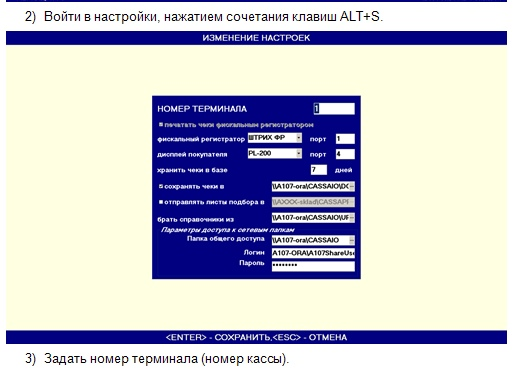

Смотрим каким портом определился дисплей. Если дисплей определился устройством USB, устонавливаем на него драйвера из под админа. Драйвера и прочее получаем из папки \\msk-robot\
Если порт больше 7, то заходим под админом и назначаем ему любой свободный порт, меньше 7. Желательно порт 2.
Загружаемся под учеткой кассира. Имя учетки - A031KASSA, где A031 - номер магазана. Если комп является старшей касой, значит имя A031STKASSA или как то так. После установки и настройки порта обязательно перезагрузить комп!
Запускаем программу Касса, когда появляется окно ввода логина пароля нажимаем ctrl+S, запускаются настройки. В них выбираем порт дисплея. Модель дислея - PL-200, если не заработает, попробовать другие модели.
Всё должно работать.
